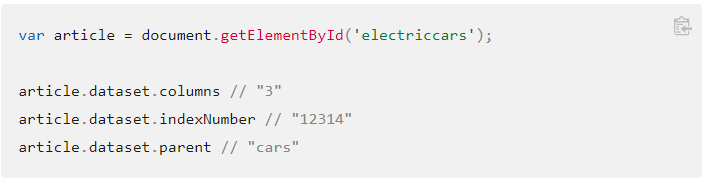
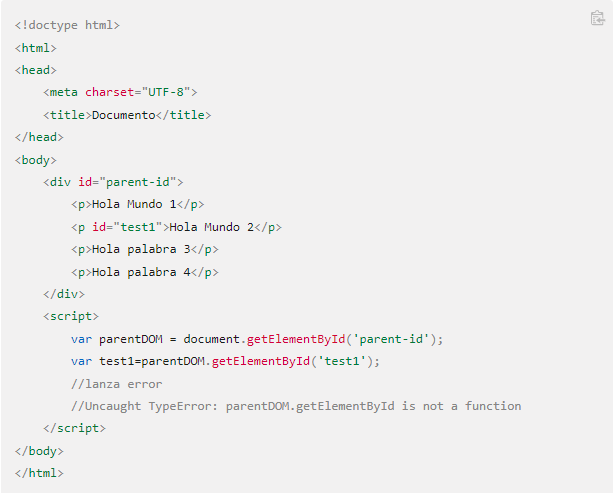
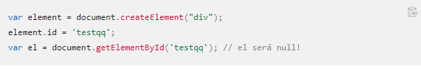
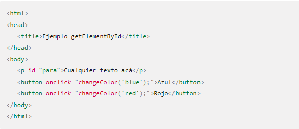
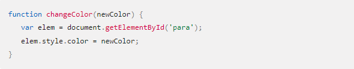

¿Qué versiones de JavaScript hay en el mercado?
En el mercado hay las siguientes versiones de JavaScript:
- JavaScript 1
- JavaScript1.1
- JavaScript 1.2
- JavaScript 1.3
- JavaScript 1.5
- JavaScript 1.5
- Microsoft tambien evoluciono y presento su version 5.5 de JavaScript
- ECMAScript 5
- ECMAScript 6
¿Cómo se integra JavaScript a HTML?
Una primer forma de integrar JAvaScript a HTML es directa. Se puede hacer utilizando la etiqueta script la cual debe contener todo el codigo JS que se escriba(esto iria en el body).Otra forma es que puede ir en el head con el atributo src .
¿Cómo es el manejo de las variables, tipos de datos y expresiones regulares en JS?
Las variables se pueden declarar usando:
- var:Tiene alcance de funcion.
- let:Tiene alcance de bloque.
- const:Tiene alcance de bloque.Es la unica variable que no se puede sobreescribir.
En JavaScript existen 7 tipo de datos:
- Strign:cadenas de textos
- Number:Valores numericos
- Boleean:Representa una entidad logica y puede tener dos valores:true y false.
- Null:Es un valor asignado tiene el valor de "no valor"
- Undefined:Una variable a la que no se le ha asignado ningun valor tiene el valor Undefined.
- Symbol:Nuevo en ECMASCRIPT 2015
- Object:Un valor en memoria al que podemos acceder por un identificador.
Las expresiones regulares son patrones de evaluacion de formato de cadenas de texto.Se emplean en diversos lenguajes de programacion .En JavaScript se utiliza para la validacion de datos cuando se ingresa los formularios de una aplicacion web.Son un sistema de busqueda , de captura o reemplazo de texto
¿Cómo son todas las formas de declaración de funciones en JS?
Formas de declaracion en JS:
- Function declaration.
- Function expression
- IIFE (immediately Invoked Function expression.
- Shorthand method definition.
- Generator Function.
- Function constructor.
¿Cuáles son los operadores y conversión entre tipos?
Los operadores y funciones convierten automaticamente los valores que se les pasan al tipo correcto.Esto es llamado "conversion de tipo".
Las tres conversiones de tipo mas usadas son a string a numero y a boolean:
- La conversion a string ocurre cuando necesitamos la representacion en forma de texto de un valor.Por ejemplo ,alert(value) lo hace para mostrar el valor como texto.
- La conversion numerica ocurre automaticamente en funciones matematicas y expresiones .Por ejemplo, cuando se dividen valores no numericos usando:/
- La conversion a boolean es la mas simple.Se produce en operaciones logicas, pero tambien puede realizarse de forma explicita llamando a la funcion Boleean (value)
¿Cuáles son las estructura de control de JS?
Las estructuras de control de JS son las siguientes:
- Switch
- Else
- If
- While
- Do While
- For
¿Qué es el objeto dom en JS? Y ¿Cómo trabaja?.
Dom significa Document Object Model, o lo que es lo mismo,la estructura del documento HTML.Una pagina HTML esta formadapor muchas etiquetas HTML anidadas una dentro de las otras , de esta manera se forma un arbol de etiquetas que se relacionan entre si , el cual se denomina arbol DOM es una estrucutra con la cual podemos modificar de forma dinamica desde Javascript , añadiendo nuevas etiquetas, modificandolas o eliminando otras, cambiado sus atributos HTML ,añadiendo clases,cambiando el contenido del texto,etc..
¿Qué función tiene en JS el Object Map?
La funcion que tiene el Object Map es la de crear un nuevo arreglo a partir de uno que ya existe.Esta funcion es una de las mas importantes a la hora de trabajar con arreglos, ya que permite iterar y controlar la forma en la que procesaremos cada uno de los elementos del arreglo en un solo paso
¿Cuáles son todos los eventos que trabaja JS?
Los eventos que trabaja JS son los siguentes:
- Abort(onabort):Se produce cuando el usuario detiene la carga
- Blur(onblur):Se produce cuando un elemento pierde el foco de la aplicacion.
- Change(onchange):Se produce cuando cambia el estado de un elemento de formulario, en ocasiones no se produce hasta que el usuario retira el foco de la aplicacion del elemento.
- Click (onclick):Se produce cuando se da una pulsacion o click al boton del raton sobre un elemento de la pagina.
- Dragdrop(ondragdrop):Se produce cuando un usuario suelta algo que habia arrastrado sobre la pagina web.
- Error(onerror):Se produce cuando no se puede cargar un documento o una imagen y esta queda rota.
- Focus(onfocus):Este evento es el contrario al onblur , ya que se produce cuando un elemento de la pagina ganan el foco de la aplicacion.
- Keydown(onkeydown):Se produce en el instante que el usuario preciosa una tecla.Se produce en el momento de la pulsacion.
- Keypress(onkeypress):Se produce cuando el usuario deja pulsada una tecla un tiempo determinado.
- Keyup(onkeyup):Se produce cuando el ususario deja de apretar una tecla.
- Loan(onloan):Se produce cuando la pagina o en javaScript 1.1.Las imagenes han terminado de cargarse.
- Mousedown(onmousedown):Se produce cuando el usuario pulsa sobre un elemento de la pagina.Se produce al momento de pulsar el boton , se suelte o no.
- Mousemove(onmousemove):Se produce cuando el raton se mueve por la pagina.
- Mouseout(onmouseout):Se produce cuando el puntero del raton sale del area ocupada por un elemento de la pagina.
- Mouseover(onmouseover):Se produce cuando el puntero del raton entra en el area ocupada por un elemento de la pagina.
- Mouseup(onmouseup):Se produce cuando el usuario suelta el boton del raton, que previamente habia pulsado.
- Move(onmove):Se produce cuando se mueve la ventana del navegador,o un frame.
- Resize(onresize):Se produce cuando se redimensiona la ventana del navegador, o el frame, es caso de que la pagina los detenga.
- Reset(onreset):Esta asociado con los formularios y se produce en el momento en el que un usuario hace click en el boton de reset de un formulario.
- Select(onselect):Se ejecuta cuando un usuario realiza una seleccion de un elemento de un formulario.
- Submit(onsubmit):Se produce cuando el visitante apreta sobre el boton de enviar el formulario.Este se ejecuta antes del envio del mismo.
- Unload(onunload):Se produce al abandora una pagina, ya sea porque se pulse en un enlace que nos lleve a otra pagina, o porque se cierre la ventana del navegador.
- Dblclick(ondblclick):Se produce cuando el usario hace doble click en un elemento de formulario o un link.
- Scroll(onscroll):Se produce cuando se realiza scroll o desplazamiento.
Con toda la investigación que generaron deben de generar un formulario que realice las
siguientes funciones.
a. ¿Qué obtenga los datos del input?.
b. ¿Qué verifique los datos que se ingresan en el input?.
c. ¿Qué el formulario presente una calculo de sumatoria para validar ¿Qué no sos
un robot”?.
Aca dejo unas imagenes con distintos ejemplos de como obtener datos desde un HTML a un JS




